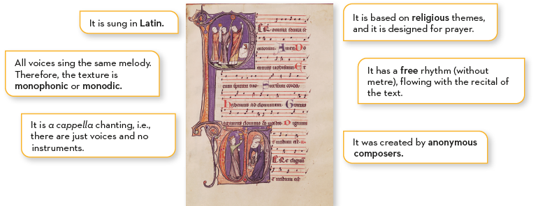
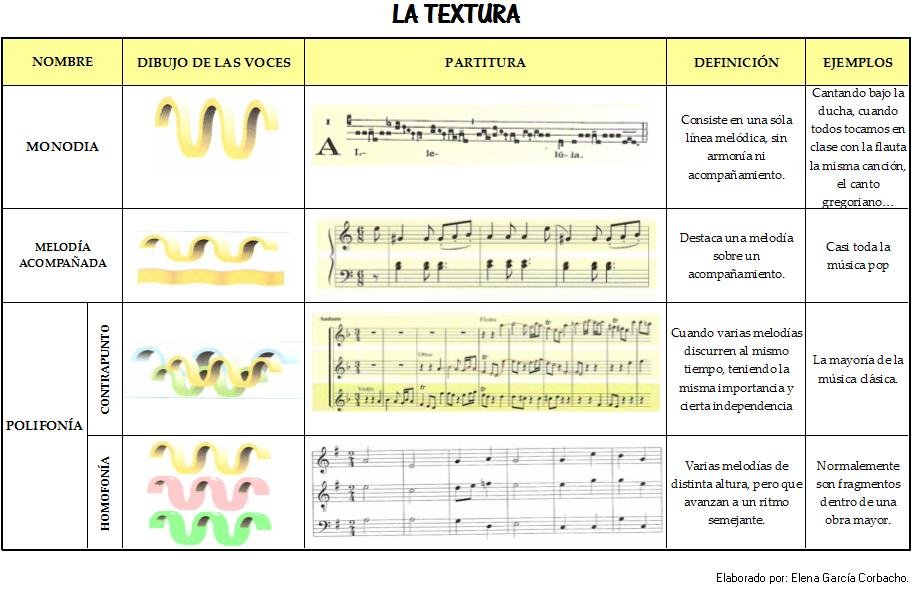

Gregorian chant
Western music evolved from the church’s medieval singing, Gregorian chant, named in honour of Pope Gregorio I (540–604), who was the first person to compile a collection.

WE LISTEN AND WE DON'T JUDGE: GREGORIAN CHANT
🎧 Listening 1
Listen to the following excerpt from a Gregorian chant and answer the following questions:
Gregorian chant - Veni Creator Spiritus
- Can you hear any instruments, or just voices?
- Are they singing in one voice or in several voices?
- Could you tell which language they are singing in?
After listening, the following characteristics of Gregorian chant can be identified:

Musical texture and types
Throughout the first few units, we’ll hear a lot about texture and types of texture. Let’s find out what they mean.
Texture: this is the way in which different melodies, rhythms and voices are combined and relate to one another within a musical work.
Tipos de textura:
- Monophony (or monody): This consists of a single melodic line without any accompaniment or harmony. If several people sing or play exactly the same notes at the same time, this is also monophony.
- Homophony: Several voices or melodies sound at the same time with different notes, but sharing the same rhythm (they move together, forming blocks of chords).
- Polyphony: Several voices or melodic lines sound at the same time, but are independent of one another and follow different rhythms. The melodies intertwine and compete for prominence.
- Melody and accompaniment: a melody stands out against an accompaniment.
